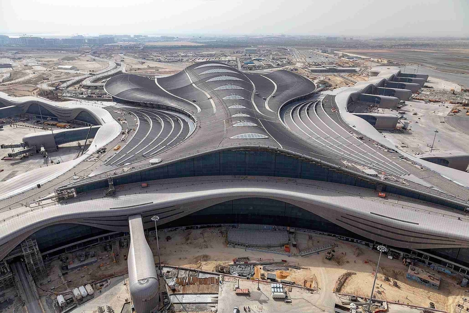

Etihad
Etihad Airways is de tweede nationale luchtvaartmaatschappij van de Verenigde Arabische Emiraten. Het hoofdkantoor is gevestigd in Khalifa City, Abu Dhabi, nabij de internationale luchthaven van Abu Dhabi. Etihad is in november 2003 van start gegaan. Het is de op een na grootste luchtvaartmaatschappij in de VAE, na Emirates. De luchtvaartmaatschappij voert meer dan 1.000 vluchten per week uit naar meer dan 120 passagiers- en vrachtbestemmingen in het Midden-Oosten, Afrika, Europa, Azië, Australië en Noord-Amerika, met een vloot van 102 Airbus- en Boeing-vliegtuigen vanaf februari 2020. In 2015 Etihad vervoerde 14,8 miljoen passagiers, een stijging van 22,3% ten opzichte van het voorgaande jaar, met een omzet van 9,02 miljard dollar en een nettowinst van 103 miljoen dollar. Zijn hoofdbasis is Abu Dhabi International Airport.

Naast de kernactiviteit personenvervoer, exploiteert Etihad ook Etihad Holidays en Etihad Cargo. Etihad heeft zijn luchtvaartalliantie, Etihad Airways Partners, in oktober 2015 opgericht, die in 2018 werd ontbonden nadat verschillende van zijn leden in financiële moeilijkheden waren geraakt. Etihad Airways houdt minderheidsbelangen in de deelnemende luchtvaartmaatschappijen en heeft ook een belang in Virgin Australia, dat niet officieel is genoteerd als een Etihad Airways-partner. De boeking voor deze luchtvaartmaatschappijen wordt geconsolideerd onder één netwerk.
Boek je ticket hier!